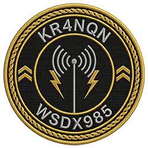

Welcome to My Website
Hi, I'm Keith
I’m an active GMRS and Amateur Radio enthusiast focused on practical communications, repeater operations,
and field‑ready gear. My interests include VHF/UHF systems, and building reliable comms setups for both
hobby and community use.
On the GMRS side, I operate under WSDX985, working with local repeaters, mobile rigs, and field‑tested
equipment throughout Citrus County. I enjoy experimenting with antennas, improving coverage, and helping
new operators get their radios programmed and running clean.
As a new Amateur operator I do want to be able to work the the HF range. With the gear that I have
currently I work the 2m / 70cm. I am on the air with my Baofeng and Icom talking to other local hams in
the area often.
If you hear me in the shadows, reach out and say Hi.
73's ~KR4NQN
